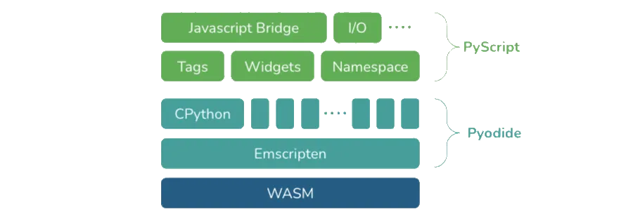

Veit SchieleCusy GmbH, BerlinPython Users Berlin, 12 May 2022
github.com/cusyio/jupyter-reveal/pub/pub_2022-05.pdf
<py>

The keynote speakers made it into Forbes: Right Now In Tech: PyCon U.S. 2022
47ms vs. 77ms